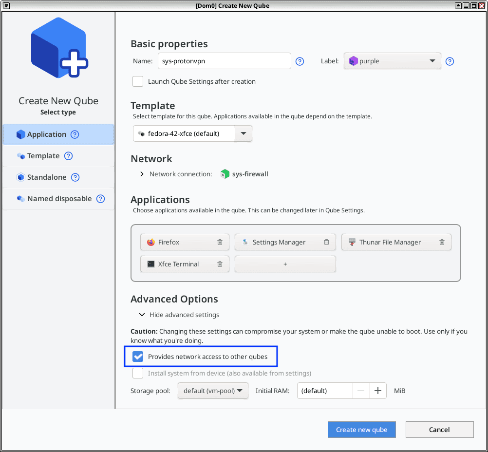
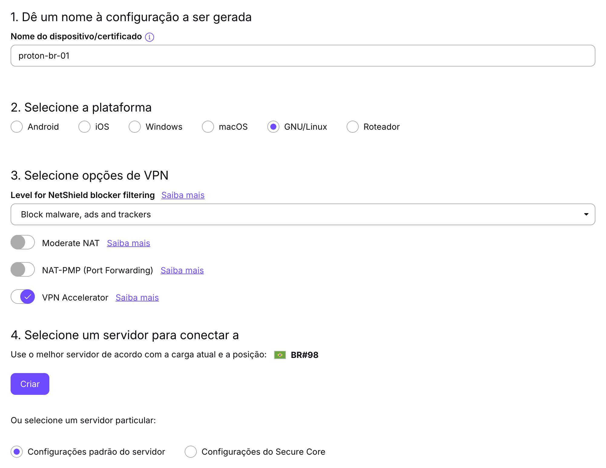

ProtonVPN no Qubes OS
Depois de finalizada a instalação do Qubes OS em uma máquina, ele não parecia fornecer um qube de rede com interfaces acessíveis para utilizar uma VPN de minha escolha, mas isso não pareceu implicar que a configuração de uma por meio de protocolos como o WireGuard fosse complicada. Irei demonstrar neste artigo utilizando uma solução relativamente popular e acessível, o ProtonVPN.
Preparando o template
Dentro do template que será utilizado no qube responsável pelo ProtonVPN, é interessante instalarmos algumas dependências relacionadas ao WireGuard e NetworkManager. Usando o fedora-42-xfce como exemplo:
$ sudo dnf install -y wireguard-tools nm-connection-editorTerminado, podemos desligar o template.
Criando o qube
Pelo Qube Manager conseguimos criar o qube facilmente através da opção “New qube”. Uma vez aberto, basta dar um nome (ex: sys-protonvpn), cor, selecionar o template e a rede de origem desejada. Aqui é crucial manter selecionado a opção “Provides network access to other qubes” em “Advanced Options”.
Depois de criado, também é importante que o serviço network-manager esteja adicionado, selecionando o qube e indo em Settings > Services.

Gerando configuração WireGuard
O ProtonVPN fornece em seu site a possibilidade de gerar uma configuração WireGuard pronta para uso. Hoje essa funcionalidade se encontra em account.protonvpn.com/downloads.
Inserimos um nome qualquer para o certificado, selecionamos GNU/Linux na plataforma e, opcionalmente, habilitamos alguns recursos para a VPN, como o bloqueio NetShield e VPN Accelerator. Por fim, basta escolher o servidor desejado e a configuração será gerada, a qual iremos querer exportar para um arquivo do tipo conf.

Preparando o qube
Dentro do terminal do qube criado anteriormente, precisaremos rodar alguns comandos:
Importamos a configuração WireGuard:
$ nmcli connection import type wireguard file <nome>.confExemplo:
$ nmcli connection import type wireguard file proton-br-01.confSubimos a VPN:
$ nmcli connection up proton-br-01Para garantir que a VPN suba automaticamente:
$ nmcli connection modify proton-br-01 connection.autoconnect yesTambém convém garantir que a interface WireGuard tenha prioridade de rota:
$ nmcli connection modify proton-br-01 ipv4.never-default no ipv6.never-default noPor fim:
$ sudo poweroffInicie o qube novamente e verifique:
$ curl icanhazip.comO IP retornado deve ser do ProtonVPN.
Evitando vazamentos
Com esse setup, se a VPN cair, ainda pode haver risco de tráfego sair pelo eth0 do qube. Para reduzir isso, é aconselhável criar um script shell que defina regras que só permitam tráfego encaminhado pela interface WireGuard.
Exemplo:
sudo vim /rw/config/vpn-killswitch.shNo conteúdo adicionamos:
#!/bin/bash
# Troque caso o nome da interface WireGuard seja outro.
WG_IF="proton-br-01"
nft delete table inet protonvpn 2>/dev/null
nft add table inet protonvpn
nft 'add chain inet protonvpn forward { type filter hook forward priority 0; policy drop; }'
nft 'add chain inet protonvpn output { type filter hook output priority 0; policy accept; }'
nft add rule inet protonvpn forward ct state established,related accept
nft add rule inet protonvpn forward oifname "$WG_IF" accept
nft add rule inet protonvpn forward oifname "eth0" dropTornamos executável:
$ sudo chmod +x /rw/config/vpn-killswitch.shPara rodar no boot do qube:
$ sudo vim /rw/config/qubes-firewall-user-scriptE adicionamos:
/rw/config/vpn-killswitch.shPermissão:
$ sudo chmod +x /rw/config/qubes-firewall-user-scriptE agora desligue e ligue o qube.
Para verificar se deu certo podemos derrubar a VPN:
$ nmcli connection down proton-br-01Em uma AppVM que use esse qube como uma NetVM, o tráfego deve falhar em vez de sair sem VPN.
Finalizando
Com o qube rodando e a VPN funcionando, agora é só utilizá-lo como rede de origem nos qubes que desejar. Além do que foi dito, também é desejável configurar para iniciá-lo na inicialização do sistema e verificar se há possíveis vazamentos de DNS. Bom hacking!